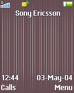
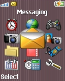
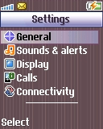

Preloaded
DB2010
128x160
Animated
Preloaded on: K510i
Supported models: K310i, K320i, K510i, W200i, W300i, Z520i, Z530i
Screenshots



⬇️ Download this Theme
Preloaded on: K510i
Supported models: K310i, K320i, K510i, W200i, W300i, Z520i, Z530i